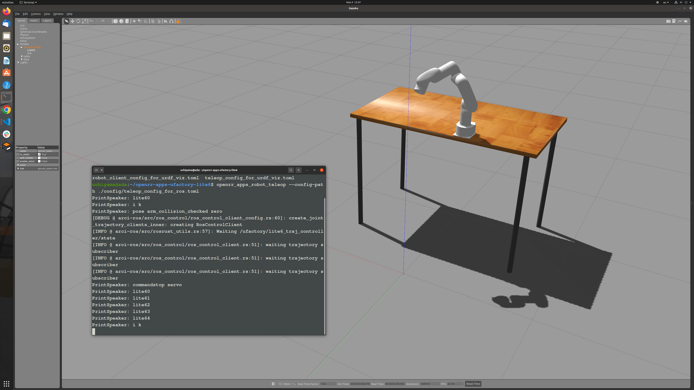
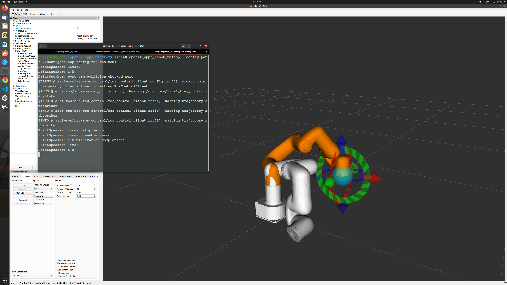

Operating robot arm with ROS/ROS2 and openrr-teleop
Ufactory Lite6 (ROS)
Setup
According to repository for xarm_ros, you can set up a robotic arm for ROS as follows.
mkdir -p ~/xarm_ws/src
cd ~/xarm_ws/src
git clone https://github.com/xArm-Developer/xarm_ros
cd xarm-ros
git pull
git submodule sync
git submodule update --init --remote
rosdep update
rosdep install --from-paths . --ignore-src --rosdistro noetic -y
cd ~/xarm_ws
catkin_make
Build OpenRR with Feature in ROS.
cd openrr
cargo build --release --feature ros
cargo install --path ./openrr-apps
Config file for client
Specify joint names, topics, etc. for ROS in ros_clients_configs.
It is also possible to name a specific posture and execute it. In this case, we will determine the initial posture and register it as initial_pose.
- robot_client_for_ros.toml
[[ros_clients_configs]]
name = "lite6"
joint_names = ["joint1", "joint2", "joint3", "joint4", "joint5", "joint6"]
complete_allowable_errors = [0.02, 0.02, 0.02, 0.02, 0.02, 0.02]
controller_name = "/ufactory/lite6_traj_controller"
state_topic_name = "/ufactory/lite6_traj_controller/state"
[openrr_clients_config]
urdf_path = "$(rospack find xarm_description)/urdf/lite6_robot.urdf.xacro"
self_collision_check_pairs = ["joint1:joint4"]
[[openrr_clients_config.ik_clients_configs]]
name = "arm_ik"
client_name = "arm_collision_checked"
solver_name = "arm_ik_solver"
[openrr_clients_config.ik_solvers_configs.arm_ik_solver]
ik_target = "joint_eef"
[[openrr_clients_config.collision_check_clients_configs]]
name = "arm_collision_checked"
client_name = "lite6"
[[openrr_clients_config.joints_poses]]
pose_name = "zero"
client_name = "arm_collision_checked"
positions = [0.0, 0.0, 0.0, 0.0, 0.0, 0.0]
[[openrr_clients_config.joints_poses]]
pose_name = "initial_pose"
client_name = "arm_collision_checked"
positions = [0.0, 0.17, 0.56, 0.0, 0.38, 0.0]
Config file for teleop
- teleop_client_for_ros.toml
robot_config_path = "robot_client_config_for_ros.toml"
[control_nodes_config]
[control_nodes_config.joints_pose_sender_config]
[[control_nodes_config.ik_node_teleop_configs]]
solver_name = "arm_ik_solver"
joint_trajectory_client_name = "lite6"
[control_nodes_config.ik_node_teleop_configs.config]
mode = "i k"
[[control_nodes_config.joy_joint_teleop_configs]]
client_name = "arm_collision_checked"
[control_nodes_config.joy_joint_teleop_configs.config]
mode = "lite6"
Assigns the configured command to be executed.
- Command to be enable servo (enable_servo.txt)
openrr_apps_robot_commands execute_command -- rosservice call /ufactory/motion_ctrl 8 1
openrr_apps_robot_commands execute_command -- rosservice call /ufactory/set_mode 1
openrr_apps_robot_commands execute_command -- rosservice call /ufactory/set_state 0
openrr_apps_robot_command speak Default "Initialization completed!"
- Command for stop servo (stop_servo.txt)
openrr_apps_robot_commands execute_command -- rosservice call /ufactory/motion_ctrl 8 0
Then add the following to the teleop file you just created file (teleop_client_for_ros.toml).
...
[[control_nodes_config.command_configs]]
name = "stop servo"
file_path = "../command/stop_servo.txt"
[[control_nodes_config.command_configs]]
name = "enable servo"
file_path = "../command/enable_servo.txt"
Then, after enabling ROS, do the following two things.
roslaunch xarm_gazebo lite6_beside_table.launch
openrr_apps_robot_teleop --config-path ./config/teleop_config_for_ros.toml

If you have a Lite6, below.
roslaunch lite6_moveit_config realMove_exec.launch robot_ip:=192.168.1.xxx
openrr_apps_robot_teleop --config-path ./config/teleop_config_for_ros.toml

Ufactory Lite6 (ROS2)
Setup
According to repository for xarm_ros2, you can set up a robotic arm for ROS2 as follows.
mkdir -p ~/xarm_ws/src
cd ~/xarm_ws/src
git clone https://github.com/xArm-Developer/xarm_ros2
cd xarm-ros2
git pull
git submodule sync
git submodule update --init --remote
rosdep update
rosdep install --from-paths . --ignore-src --rosdistro $ROS_DISTRO -y
cd ~/xarm_ws
colcon build
Build OpenRR with Feature in ROS2.
cd openrr
cargo build --release --feature ros2
cargo install --path ./openrr-apps
Config file for client
For ROS2, specify as a plugin.
[plugins.arci_ros2]
# Path to OpenRR
path = "../../openrr/target/release/libarci_ros2"
[[plugins.arci_ros2.instances]]
name = "lite6"
type = "JointTrajectoryClient"
args = """
action_name = "/lite6_traj_controller"
"""
[openrr_clients_config]
urdf_path = "../lite6_robot.urdf"
self_collision_check_pairs = ["joint1:joint4"]
[[openrr_clients_config.ik_clients_configs]]
name = "arm_ik"
client_name = "arm_collision_checked"
solver_name = "arm_ik_solver"
[openrr_clients_config.ik_solvers_configs.arm_ik_solver]
ik_target = "joint_eef"
[[openrr_clients_config.collision_check_clients_configs]]
name = "arm_collision_checked"
client_name = "lite6"
[[openrr_clients_config.joints_poses]]
pose_name = "zero"
client_name = "arm_collision_checked"
positions = [0.0, 0.0, 0.0, 0.0, 0.0, 0.0]
[[openrr_clients_config.joints_poses]]
pose_name = "initial_pose"
client_name = "arm_collision_checked"
positions = [0.0, 0.17, 0.56, 0.0, 0.38, 0.0]
Config file for teleop
The teleop config file is same as the ROS one.
robot_config_path = "robot_client_config_for_ros2.toml"
[control_nodes_config]
joints_pose_sender_config.mode = "pose"
[[control_nodes_config.ik_node_teleop_configs]]
solver_name = "arm_ik_solver"
joint_trajectory_client_name = "lite6"
[control_nodes_config.ik_node_teleop_configs.config]
mode = "i k"
[[control_nodes_config.joy_joint_teleop_configs]]
client_name = "arm_collision_checked"
[control_nodes_config.joy_joint_teleop_configs.config]
mode = "lite6"
Note
See also xarm_ros and xarm_ros2, openrr-apps-ufactory-lite6